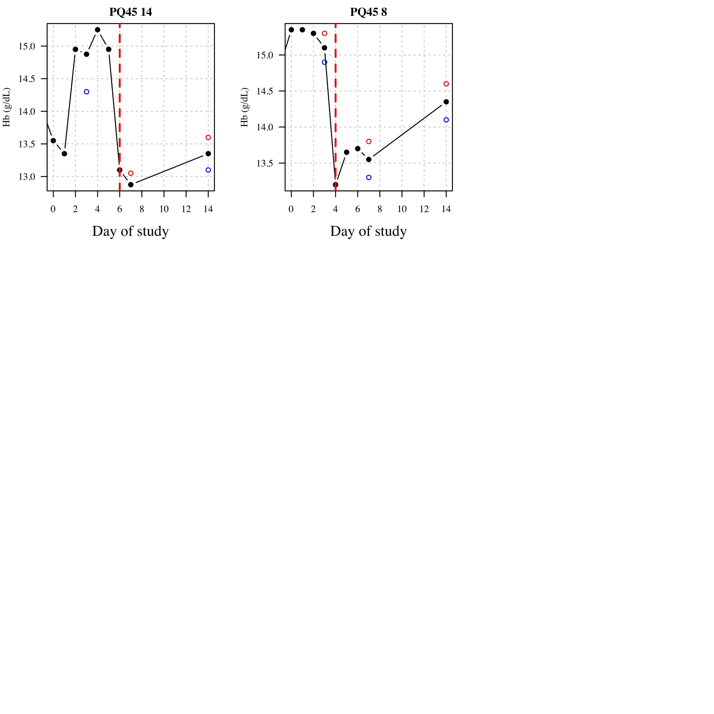
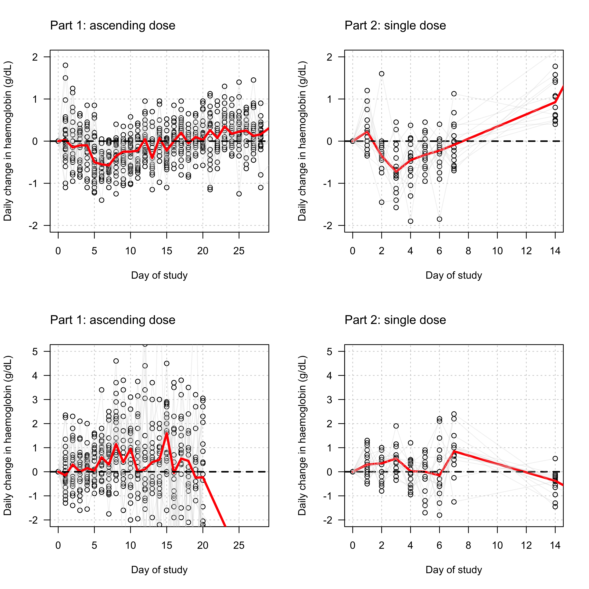
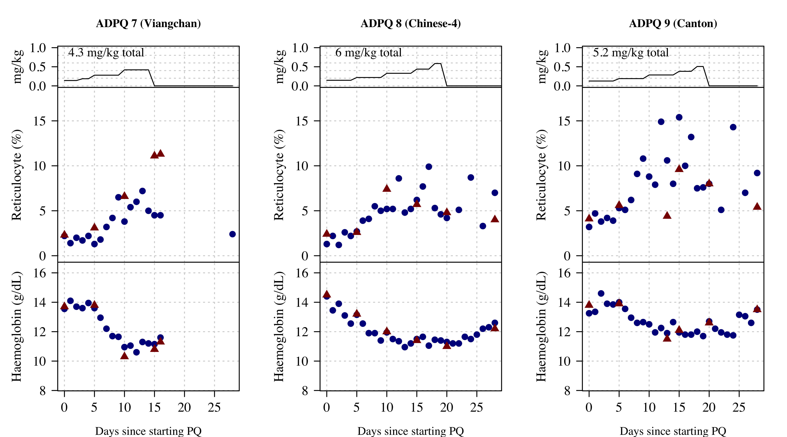
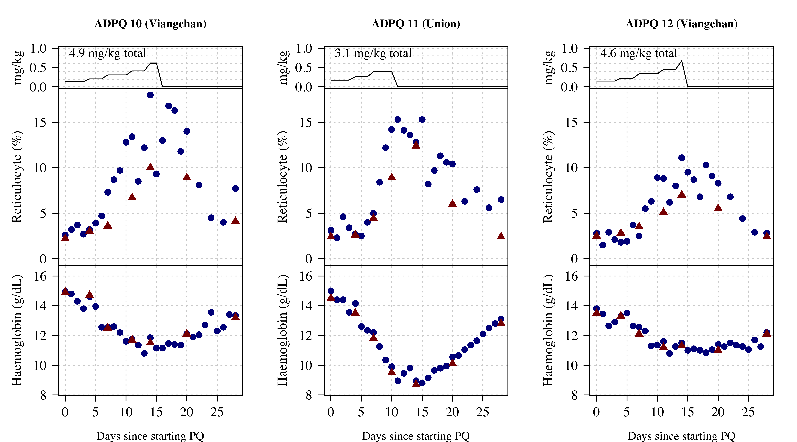
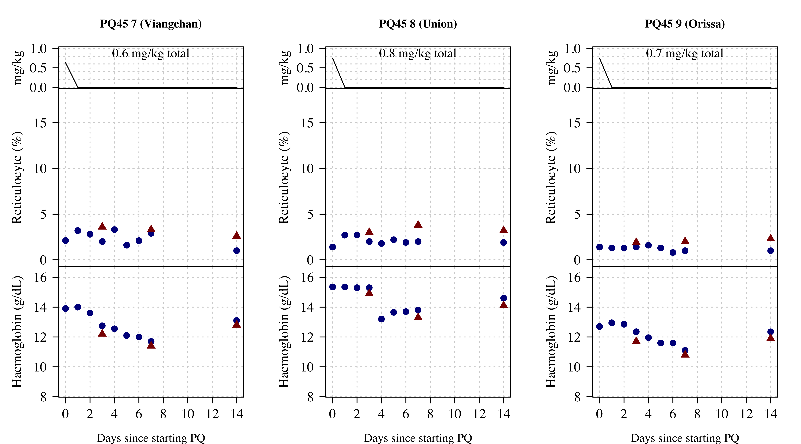
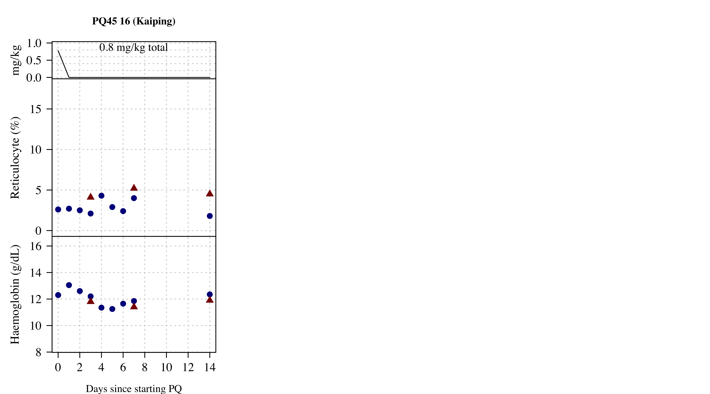
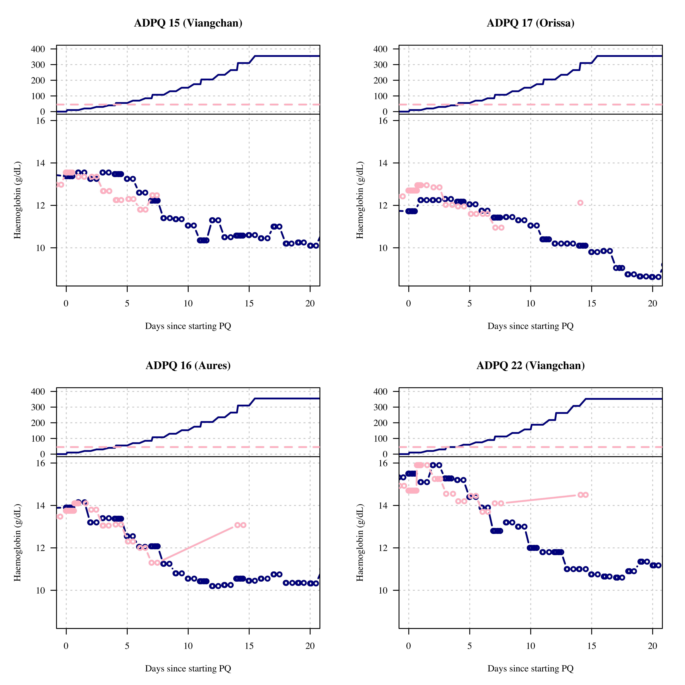
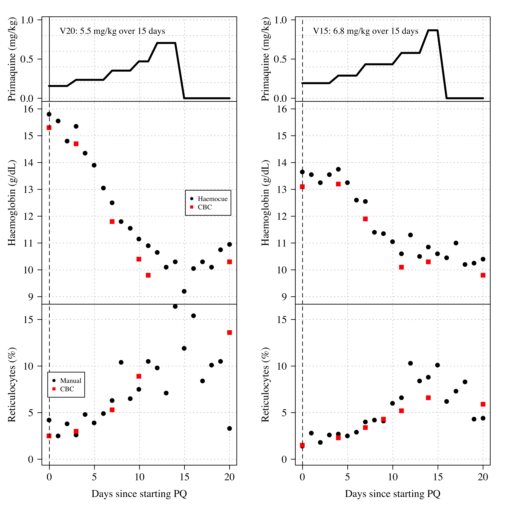

── Attaching packages ─────────────────────────────────────── tidyverse 1.3.2 ──
✔ ggplot2 3.4.0 ✔ dplyr 1.0.10
✔ tibble 3.1.8 ✔ stringr 1.5.0
✔ tidyr 1.2.1 ✔ forcats 0.5.2
✔ purrr 0.3.5
── Conflicts ────────────────────────────────────────── tidyverse_conflicts() ──
✖ dplyr::filter() masks stats::filter()
✖ dplyr::lag() masks stats::lag()
Loading required package: Rcpp
This is rstanarm version 2.21.3
- See https://mc-stan.org/rstanarm/articles/priors for changes to default priors!
- Default priors may change, so it's safest to specify priors, even if equivalent to the defaults.
- For execution on a local, multicore CPU with excess RAM we recommend calling
options(mc.cores = parallel::detectCores())Primaquine challenge studies
Load all data
Endpoint definitions
See SAP where these are outlined.
We compute all endpoints and exposure summaries for all subjects in both sub-studies
Table 1
Baseline characteristics
*1/*1 *1/*10 *1/*2 *10/*10 *2/*10 N*2/*10
2 7 3 8 6 1
FALSE TRUE
20 7 G6PD variants`summarise()` has grouped output by 'study'. You can override using the
`.groups` argument.# A tibble: 14 × 3
# Groups: study [2]
study G6PD_variant n
<chr> <chr> <int>
1 Part1 Aures 1
2 Part1 Canton 4
3 Part1 Chinese-4 1
4 Part1 Mahidol 4
5 Part1 Orissa 1
6 Part1 Union 1
7 Part1 Viangchan 12
8 Part2 Aures 1
9 Part2 Canton 3
10 Part2 Kaiping 1
11 Part2 Mahidol 2
12 Part2 Orissa 1
13 Part2 Union 2
14 Part2 Viangchan 6# A tibble: 8 × 2
G6PD_variant n
<chr> <int>
1 Aures 1
2 Canton 5
3 Chinese-4 1
4 Kaiping 1
5 Mahidol 4
6 Orissa 1
7 Union 2
8 Viangchan 12Age (years):`summarise()` has grouped output by 'study'. You can override using the
`.groups` argument.# A tibble: 6 × 2
# Groups: study [2]
study Age
<chr> <dbl>
1 Part1 18
2 Part1 32
3 Part1 55
4 Part2 20
5 Part2 34
6 Part2 58 Age
1 18
2 32
3 58Weight (kg):`summarise()` has grouped output by 'study'. You can override using the
`.groups` argument.# A tibble: 6 × 2
# Groups: study [2]
study Weight
<chr> <dbl>
1 Part1 45.9
2 Part1 64.3
3 Part1 85.6
4 Part2 51.6
5 Part2 64.1
6 Part2 86.1 Weight
1 45.9
2 64.3
3 86.1Baseline Hb:`summarise()` has grouped output by 'study'. You can override using the
`.groups` argument.# A tibble: 6 × 2
# Groups: study [2]
study `Baseline Hb`
<chr> <dbl>
1 Part1 11.8
2 Part1 14.3
3 Part1 15.8
4 Part2 12.3
5 Part2 14.1
6 Part2 15.9Baseline retics:`summarise()` has grouped output by 'study'. You can override using the
`.groups` argument.# A tibble: 6 × 2
# Groups: study [2]
study `Baseline Hb`
<chr> <dbl>
1 Part1 1.10
2 Part1 2.37
3 Part1 3.75
4 Part2 0.950
5 Part2 1.87
6 Part2 2.85 # A tibble: 2 × 2
study `Proportion baseline retic >2%`
<chr> <int>
1 Part1 17
2 Part2 5Baseline platelets:`summarise()` has grouped output by 'study'. You can override using the
`.groups` argument.# A tibble: 6 × 2
# Groups: study [2]
study `Baseline platelets`
<chr> <dbl>
1 Part1 190.
2 Part1 286
3 Part1 424.
4 Part2 174
5 Part2 289
6 Part2 412 Baseline WBC:`summarise()` has grouped output by 'study'. You can override using the
`.groups` argument.# A tibble: 6 × 2
# Groups: study [2]
study `Baseline WBC`
<chr> <dbl>
1 Part1 4.75
2 Part1 6.77
3 Part1 9.25
4 Part2 5.20
5 Part2 6.55
6 Part2 8.40Baseline metHb:`summarise()` has grouped output by 'study'. You can override using the
`.groups` argument.# A tibble: 6 × 2
# Groups: study [2]
study `Baseline metHb`
<chr> <dbl>
1 Part1 0
2 Part1 0.500
3 Part1 1.5
4 Part2 0
5 Part2 0.710
6 Part2 1.40 Baseline AST:`summarise()` has grouped output by 'study'. You can override using the
`.groups` argument.# A tibble: 6 × 2
# Groups: study [2]
study `Baseline AST`
<chr> <dbl>
1 Part1 15
2 Part1 22.5
3 Part1 60
4 Part2 14
5 Part2 20.5
6 Part2 36 Baseline ALT:`summarise()` has grouped output by 'study'. You can override using the
`.groups` argument.# A tibble: 6 × 2
# Groups: study [2]
study `Baseline ALT`
<chr> <dbl>
1 Part1 10
2 Part1 25.5
3 Part1 85
4 Part2 11
5 Part2 22
6 Part2 47 Baseline creatinine:`summarise()` has grouped output by 'study'. You can override using the
`.groups` argument.# A tibble: 6 × 2
# Groups: study [2]
study `Baseline creatinine`
<chr> <dbl>
1 Part1 0.780
2 Part1 0.935
3 Part1 1.12
4 Part2 0.700
5 Part2 0.965
6 Part2 1.07 Baseline total bilirubin:`summarise()` has grouped output by 'study'. You can override using the
`.groups` argument.# A tibble: 6 × 2
# Groups: study [2]
study `Baseline TBR`
<chr> <dbl>
1 Part1 0.300
2 Part1 0.600
3 Part1 1.60
4 Part2 0.300
5 Part2 0.650
6 Part2 1.30 Baseline haptoglobin:`summarise()` has grouped output by 'study'. You can override using the
`.groups` argument.# A tibble: 6 × 2
# Groups: study [2]
study `Baseline Haptoglobin`
<chr> <dbl>
1 Part1 0.510
2 Part1 1.05
3 Part1 1.65
4 Part2 0.520
5 Part2 1.14
6 Part2 1.68 Summary of endpoints and exposures
Nadir haemoglobin and peak retics:`summarise()` has grouped output by 'study'. You can override using the
`.groups` argument.# A tibble: 6 × 3
# Groups: study [2]
study `Min Hb (g/dL)` `Max retic (%)`
<chr> <dbl> <dbl>
1 Part1 8.62 4.15
2 Part1 10.6 10.3
3 Part1 12.1 16.8
4 Part2 9.45 1.65
5 Part2 12.1 3.15
6 Part2 13.7 6.10day 10 dose:`summarise()` has grouped output by 'study'. You can override using the
`.groups` argument.# A tibble: 6 × 2
# Groups: study [2]
study `Day10 PQ`
<chr> <dbl>
1 Part1 1.70
2 Part1 2.62
3 Part1 3.47
4 Part2 NA
5 Part2 NA
6 Part2 NA Haemoglobin falls in ascending dose regimens (median and range):`summarise()` has grouped output by 'study'. You can override using the
`.groups` argument.# A tibble: 6 × 3
# Groups: study [2]
study `Max absolute Hb fall (g/dL)` `Max relative Hb fall (%)`
<chr> <dbl> <dbl>
1 Part1 -5.88 -40.0
2 Part1 -3.71 -26.4
3 Part1 -2.10 -15.2
4 Part2 -4.06 -30.1
5 Part2 -1.65 -11.8
6 Part2 -0.913 -6.62Day of Haemoglobin nadir and reticulocyte peak (median, observed):`summarise()` has grouped output by 'study'. You can override using the
`.groups` argument.# A tibble: 6 × 3
# Groups: study [2]
study `Day of Hb nadir` `Day of reticulocyte peak`
<chr> <dbl> <dbl>
1 Part1 11 11
2 Part1 16 16
3 Part1 25 20
4 Part2 4 3
5 Part2 6 7
6 Part2 7 14Day of Hb_nadir:`summarise()` has grouped output by 'study'. You can override using the
`.groups` argument.# A tibble: 6 × 2
# Groups: study [2]
study `Day Hb nadir`
<chr> <dbl>
1 Part1 11
2 Part1 16
3 Part1 25
4 Part2 4
5 Part2 6
6 Part2 7Day of peak retics:`summarise()` has grouped output by 'study'. You can override using the
`.groups` argument.# A tibble: 6 × 2
# Groups: study [2]
study `Day peak reticulocytes`
<chr> <dbl>
1 Part1 11
2 Part1 16
3 Part1 20
4 Part2 3
5 Part2 7
6 Part2 14Total PQ dose:`summarise()` has grouped output by 'study'. You can override using the
`.groups` argument.# A tibble: 6 × 2
# Groups: study [2]
study `Total PQ dose`
<chr> <dbl>
1 Part1 2.83
2 Part1 5.17
3 Part1 8.39
4 Part2 0.523
5 Part2 0.705
6 Part2 0.872Part 1

Part 2

Bilirubin and LDH

Dose response part 1
`summarise()` has grouped output by 'study'. You can override using the
`.groups` argument.# A tibble: 6 × 2
# Groups: study [2]
study `Total day 10 dose (mg/kg)`
<chr> <dbl>
1 Part1 1.70
2 Part1 2.62
3 Part1 3.47
4 Part2 NA
5 Part2 NA
6 Part2 NA
Call:
lm(formula = Max_hb_fall_abs ~ Day10_total_PQ, data = PQ_unique)
Residuals:
Min 1Q Median 3Q Max
-1.5488 -0.4884 -0.1169 0.5527 1.3776
Coefficients:
Estimate Std. Error t value Pr(>|t|)
(Intercept) -0.9232 0.8120 -1.137 0.26838
Day10_total_PQ -1.1579 0.3103 -3.732 0.00123 **
---
Signif. codes: 0 '***' 0.001 '**' 0.01 '*' 0.05 '.' 0.1 ' ' 1
Residual standard error: 0.8401 on 21 degrees of freedom
(16 observations deleted due to missingness)
Multiple R-squared: 0.3987, Adjusted R-squared: 0.3701
F-statistic: 13.93 on 1 and 21 DF, p-value: 0.001232
Call:
lm(formula = Max_hb_fall_abs ~ Total_PQ, data = PQ_unique[ind_part2,
])
Residuals:
Min 1Q Median 3Q Max
-1.9593 -0.6711 0.1462 0.7270 1.0322
Coefficients:
Estimate Std. Error t value Pr(>|t|)
(Intercept) -0.5004 1.5141 -0.330 0.746
Total_PQ -2.0872 2.1661 -0.964 0.352
Residual standard error: 0.9039 on 14 degrees of freedom
Multiple R-squared: 0.06219, Adjusted R-squared: -0.004793
F-statistic: 0.9284 on 1 and 14 DF, p-value: 0.3516
Call:
lm(formula = Max_hb_fall_rel ~ Day10_total_PQ, data = PQ_unique)
Residuals:
Min 1Q Median 3Q Max
-9.1615 -2.7190 0.4991 3.1189 7.9080
Coefficients:
Estimate Std. Error t value Pr(>|t|)
(Intercept) -6.877 4.589 -1.499 0.148860
Day10_total_PQ -7.857 1.753 -4.481 0.000206 ***
---
Signif. codes: 0 '***' 0.001 '**' 0.01 '*' 0.05 '.' 0.1 ' ' 1
Residual standard error: 4.747 on 21 degrees of freedom
(16 observations deleted due to missingness)
Multiple R-squared: 0.4888, Adjusted R-squared: 0.4644
F-statistic: 20.08 on 1 and 21 DF, p-value: 0.0002058
Call:
lm(formula = Max_hb_fall_rel ~ Total_PQ, data = PQ_unique[ind_part2,
])
Residuals:
Min 1Q Median 3Q Max
-15.082 -4.096 1.367 4.964 7.071
Coefficients:
Estimate Std. Error t value Pr(>|t|)
(Intercept) -2.649 10.441 -0.254 0.803
Total_PQ -16.061 14.937 -1.075 0.300
Residual standard error: 6.233 on 14 degrees of freedom
Multiple R-squared: 0.07629, Adjusted R-squared: 0.01031
F-statistic: 1.156 on 1 and 14 DF, p-value: 0.3004
Call:
lm(formula = Rate_Hb_fall ~ Day10_total_PQ, data = PQ_unique)
Residuals:
Min 1Q Median 3Q Max
-0.172848 -0.087063 0.001941 0.073131 0.253285
Coefficients:
Estimate Std. Error t value Pr(>|t|)
(Intercept) -0.26463 0.11455 -2.310 0.0311 *
Day10_total_PQ -0.05555 0.04378 -1.269 0.2183
---
Signif. codes: 0 '***' 0.001 '**' 0.01 '*' 0.05 '.' 0.1 ' ' 1
Residual standard error: 0.1185 on 21 degrees of freedom
(16 observations deleted due to missingness)
Multiple R-squared: 0.07123, Adjusted R-squared: 0.027
F-statistic: 1.61 on 1 and 21 DF, p-value: 0.2183
Call:
lm(formula = Rate_Hb_fall ~ Total_PQ, data = PQ_unique[ind_part2,
])
Residuals:
Min 1Q Median 3Q Max
-0.34164 -0.11798 0.02742 0.12131 0.21493
Coefficients:
Estimate Std. Error t value Pr(>|t|)
(Intercept) -0.04862 0.27723 -0.175 0.863
Total_PQ -0.42350 0.39662 -1.068 0.304
Residual standard error: 0.1655 on 14 degrees of freedom
Multiple R-squared: 0.07531, Adjusted R-squared: 0.009257
F-statistic: 1.14 on 1 and 14 DF, p-value: 0.3037Additional predictive models. #### Part 1
5% 95%
(Intercept) -16.54327508 44.3966505
Day10_total_PQ -9.10636213 -2.7338616
Baseline_Retic -7.52094195 0.3815116
Baseline_Hb -4.05326988 1.0849171
G6PD_variantCanton 0.08152942 15.8912553
G6PD_variantChinese-4 -7.83519317 11.1713338
G6PD_variantMahidol -5.72208244 10.5810729
G6PD_variantOrissa -11.96805813 8.3300181
G6PD_variantUnion -12.13557450 6.0753487
G6PD_variantViangchan -3.67612792 9.8769154
CYP2D6 == "*10/*10"TRUE -3.68707354 2.6869476
sigma 3.05126757 5.5034388
log-fit_ratio -0.19424080 0.1828597
R2 0.36626588 0.7668765Part 2
5% 95%
(Intercept) -59.2967937 52.2980082
Total_PQ -41.1819060 5.5036830
Baseline_Retic -4.8102829 5.1900427
Baseline_Hb -3.4597633 3.1421045
G6PD_variantCanton -6.8348634 12.9919216
G6PD_variantKaiping -8.2852775 21.8917682
G6PD_variantMahidol -8.7848347 12.6909060
G6PD_variantOrissa -8.6734889 17.7009505
G6PD_variantUnion -7.8626712 13.8850963
G6PD_variantViangchan -6.2457578 14.5760674
CYP2D6 == "*10/*10"TRUE -7.4852671 3.6753762
sigma 4.3076898 8.1146446
log-fit_ratio -0.1710268 0.4370426
R2 0.1545085 0.4935664Comparing both studies

A total of 0 subjects in ascending dose had greater than 1 g/dL decrease over subsequent visits`summarise()` has grouped output by 'label'. You can override using the
`.groups` argument.
Rate of Hb decrease versus rate of retic increase

Daily reduction versus total bilirubin
Call:
lm(formula = Tot_bili_absolute ~ Daily_hb_change, data = xx[xx$study ==
"Part1", ])
Residuals:
Min 1Q Median 3Q Max
-1.34218 -0.40040 -0.01392 0.37109 2.54477
Coefficients:
Estimate Std. Error t value Pr(>|t|)
(Intercept) 1.06103 0.08403 12.626 <2e-16 ***
Daily_hb_change -0.25122 0.16380 -1.534 0.129
---
Signif. codes: 0 '***' 0.001 '**' 0.01 '*' 0.05 '.' 0.1 ' ' 1
Residual standard error: 0.6764 on 74 degrees of freedom
(292 observations deleted due to missingness)
Multiple R-squared: 0.03081, Adjusted R-squared: 0.01771
F-statistic: 2.352 on 1 and 74 DF, p-value: 0.1294
Call:
lm(formula = Tot_bili_absolute ~ Daily_hb_change, data = xx[xx$study ==
"Part2", ])
Residuals:
Min 1Q Median 3Q Max
-1.6454 -0.9434 -0.3119 0.7776 3.4843
Coefficients:
Estimate Std. Error t value Pr(>|t|)
(Intercept) 0.7145 0.2588 2.761 0.00974 **
Daily_hb_change -1.1870 0.3680 -3.225 0.00303 **
---
Signif. codes: 0 '***' 0.001 '**' 0.01 '*' 0.05 '.' 0.1 ' ' 1
Residual standard error: 1.272 on 30 degrees of freedom
(96 observations deleted due to missingness)
Multiple R-squared: 0.2575, Adjusted R-squared: 0.2327
F-statistic: 10.4 on 1 and 30 DF, p-value: 0.003034Individual data










patients who got both



drop in haemoglobin once PQ was stopped
Secondary endpoints
Blood methaemoglobin
Call:
lm(formula = Peak_metHb ~ Day10_total_PQ, data = xx1)
Residuals:
Min 1Q Median 3Q Max
-0.45082 -0.21729 -0.03175 0.23193 0.46757
Coefficients:
Estimate Std. Error t value Pr(>|t|)
(Intercept) 2.2222 0.2891 7.686 1.56e-07 ***
Day10_total_PQ -0.2878 0.1105 -2.604 0.0166 *
---
Signif. codes: 0 '***' 0.001 '**' 0.01 '*' 0.05 '.' 0.1 ' ' 1
Residual standard error: 0.2991 on 21 degrees of freedom
Multiple R-squared: 0.2441, Adjusted R-squared: 0.2081
F-statistic: 6.782 on 1 and 21 DF, p-value: 0.01656
Call:
lm(formula = Peak_metHb ~ Total_PQ, data = xx2)
Residuals:
Min 1Q Median 3Q Max
-0.73066 -0.32552 0.01532 0.32469 0.61377
Coefficients:
Estimate Std. Error t value Pr(>|t|)
(Intercept) 2.6622 0.7087 3.756 0.00213 **
Total_PQ -2.0523 1.0139 -2.024 0.06248 .
---
Signif. codes: 0 '***' 0.001 '**' 0.01 '*' 0.05 '.' 0.1 ' ' 1
Residual standard error: 0.4231 on 14 degrees of freedom
Multiple R-squared: 0.2264, Adjusted R-squared: 0.1711
F-statistic: 4.097 on 1 and 14 DF, p-value: 0.06248
Liver transaminases, creatinine, and haptoglobin
Normalised increases:
Dose response
Call:
lm(formula = Max_AST_increase ~ Day10_total_PQ, data = xx)
Residuals:
Min 1Q Median 3Q Max
-0.9996 -0.6464 -0.1407 0.4982 2.3084
Coefficients:
Estimate Std. Error t value Pr(>|t|)
(Intercept) 0.96391 0.82629 1.167 0.256
Day10_total_PQ 0.01531 0.31575 0.049 0.962
Residual standard error: 0.8548 on 21 degrees of freedom
Multiple R-squared: 0.000112, Adjusted R-squared: -0.0475
F-statistic: 0.002352 on 1 and 21 DF, p-value: 0.9618
Call:
lm(formula = Max_ALT_increase ~ Day10_total_PQ, data = xx)
Residuals:
Min 1Q Median 3Q Max
-1.2014 -0.8010 -0.4291 0.5510 2.7849
Coefficients:
Estimate Std. Error t value Pr(>|t|)
(Intercept) 0.5197 1.0565 0.492 0.628
Day10_total_PQ 0.3650 0.4037 0.904 0.376
Residual standard error: 1.093 on 21 degrees of freedom
Multiple R-squared: 0.03747, Adjusted R-squared: -0.008368
F-statistic: 0.8174 on 1 and 21 DF, p-value: 0.3762
Call:
lm(formula = Max_Creat_increase ~ Day10_total_PQ, data = xx)
Residuals:
Min 1Q Median 3Q Max
-0.09604 -0.08927 -0.04754 0.08608 0.28688
Coefficients:
Estimate Std. Error t value Pr(>|t|)
(Intercept) 0.081745 0.103838 0.787 0.440
Day10_total_PQ 0.004239 0.039680 0.107 0.916
Residual standard error: 0.1074 on 21 degrees of freedom
Multiple R-squared: 0.0005431, Adjusted R-squared: -0.04705
F-statistic: 0.01141 on 1 and 21 DF, p-value: 0.9159
Call:
lm(formula = Max_Haptoglobin_decrease ~ Day10_total_PQ, data = xx)
Residuals:
Min 1Q Median 3Q Max
-0.63875 -0.24759 0.08749 0.25233 0.58755
Coefficients:
Estimate Std. Error t value Pr(>|t|)
(Intercept) -0.02084 0.34531 -0.060 0.952
Day10_total_PQ -0.19585 0.13195 -1.484 0.153
Residual standard error: 0.3572 on 21 degrees of freedom
Multiple R-squared: 0.09495, Adjusted R-squared: 0.05185
F-statistic: 2.203 on 1 and 21 DF, p-value: 0.1526Look at the dose-reponse for liver tox
Call:
lm(formula = Max_ALT_increase ~ Day10_total_PQ, data = PQ_unique[ind_part1,
])
Residuals:
Min 1Q Median 3Q Max
-1.2014 -0.8010 -0.4291 0.5510 2.7849
Coefficients:
Estimate Std. Error t value Pr(>|t|)
(Intercept) 0.5197 1.0565 0.492 0.628
Day10_total_PQ 0.3650 0.4037 0.904 0.376
Residual standard error: 1.093 on 21 degrees of freedom
Multiple R-squared: 0.03747, Adjusted R-squared: -0.008368
F-statistic: 0.8174 on 1 and 21 DF, p-value: 0.3762
Call:
lm(formula = Max_AST_increase ~ Day10_total_PQ, data = PQ_unique[ind_part1,
])
Residuals:
Min 1Q Median 3Q Max
-0.9996 -0.6464 -0.1407 0.4982 2.3084
Coefficients:
Estimate Std. Error t value Pr(>|t|)
(Intercept) 0.96391 0.82629 1.167 0.256
Day10_total_PQ 0.01531 0.31575 0.049 0.962
Residual standard error: 0.8548 on 21 degrees of freedom
Multiple R-squared: 0.000112, Adjusted R-squared: -0.0475
F-statistic: 0.002352 on 1 and 21 DF, p-value: 0.9618
Call:
lm(formula = Max_Creat_increase ~ Day10_total_PQ, data = PQ_unique[ind_part1,
])
Residuals:
Min 1Q Median 3Q Max
-0.09604 -0.08927 -0.04754 0.08608 0.28688
Coefficients:
Estimate Std. Error t value Pr(>|t|)
(Intercept) 0.081745 0.103838 0.787 0.440
Day10_total_PQ 0.004239 0.039680 0.107 0.916
Residual standard error: 0.1074 on 21 degrees of freedom
Multiple R-squared: 0.0005431, Adjusted R-squared: -0.04705
F-statistic: 0.01141 on 1 and 21 DF, p-value: 0.9159
Call:
lm(formula = Max_TBR_increase ~ Day10_total_PQ, data = PQ_unique[ind_part1,
])
Residuals:
Min 1Q Median 3Q Max
-1.32093 -0.24384 0.03174 0.24537 1.85803
Coefficients:
Estimate Std. Error t value Pr(>|t|)
(Intercept) 0.5735 0.5947 0.964 0.346
Day10_total_PQ 0.3762 0.2273 1.655 0.113
Residual standard error: 0.6153 on 21 degrees of freedom
Multiple R-squared: 0.1154, Adjusted R-squared: 0.07329
F-statistic: 2.74 on 1 and 21 DF, p-value: 0.1127
Subject 11

Comparing two Viangchan
